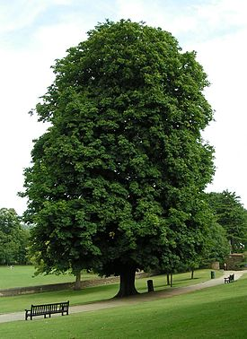
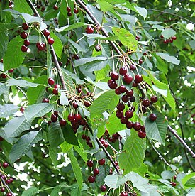
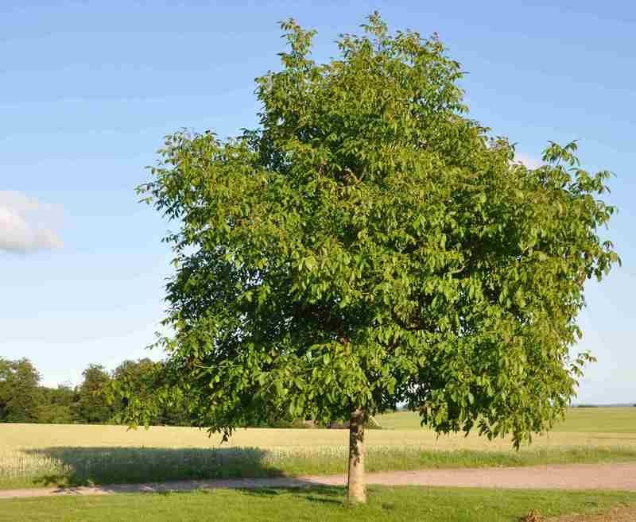
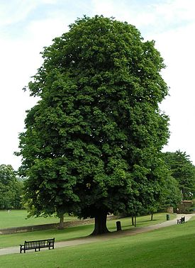
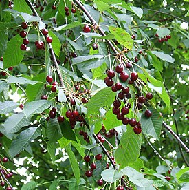
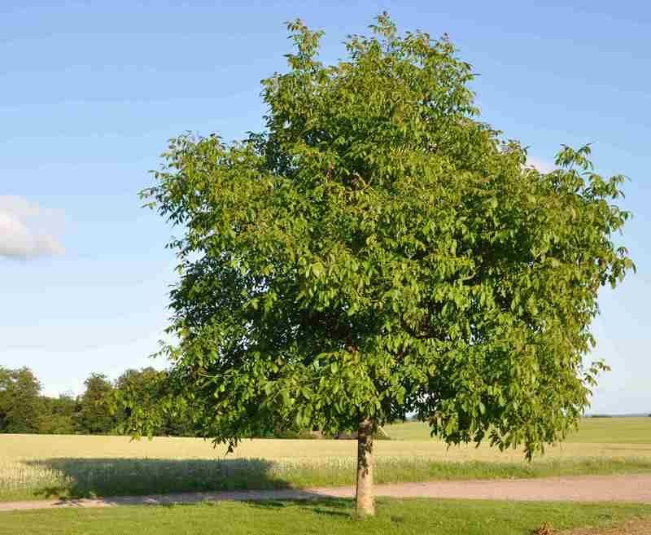

рід багаторічних рослин родини букових, що налічує приблизно 430 негібридних видів. Його представники поширені переважно у помірних і тропічних областях Північної півкулі. Серед дубів існують цінні деревні, танідоносні, лікарські та декоративні рослини, деякі з них у минулому широко використовували як харчові.
<рід листопадних дерев та кущів родини березові (Betulaceae) . В Україні поширені види переважно з гладенькою білою корою, при основі стовбура кора чорно-сіра, глибокотріщинувата. Проте у світовій флорі більшість видів беріз мають темне забарвлення кори. Квітки одностатеві, рослина однодомна. Загальна кількість видів — близько 120 по всій Північній півкулі від субтропіків до тундри.
рід дерев, кущів або напівкущів родини вербових (Salicaceae). Деякі види рослин з роду верба мають і деревну, і кущову форми.
рід дерев та кущів родини сапіндових. Налічує близько 150 видів, батьківщина більшості з яких — Азія, але кілька видів також мешкають в Європі, Північній Африці та Північній Америці. Клени — медоноси.
Дізнатись більше